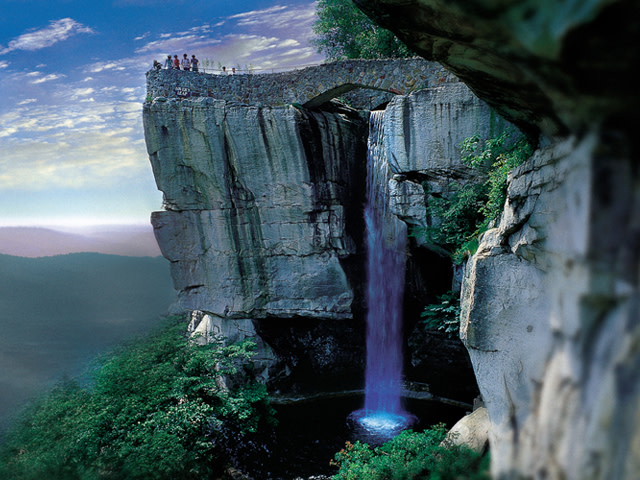

Must-See Places
Explore Chattanooga's Best Attractions
Chattanooga is home to a wide range of attractions that appeal to visitors of all ages and interests. Whether you’re looking for outdoor adventures, family-friendly activities, or cultural experiences, there’s something for everyone. Some of the top places to visit in Chattanooga include Lookout Mountain, the Tennessee Aquarium, and the famous Ruby Falls.
Lookout Mountain, known for its breathtaking views, offers visitors several exciting experiences. The Incline Railway takes you on one of the world’s steepest railways to the top, where you can enjoy panoramic views of the city and the surrounding region. Additionally, Rock City Gardens provides a beautiful walking trail through unique rock formations and gardens. For those interested in history, the Civil War battlefield at Point Park is a must-see.
